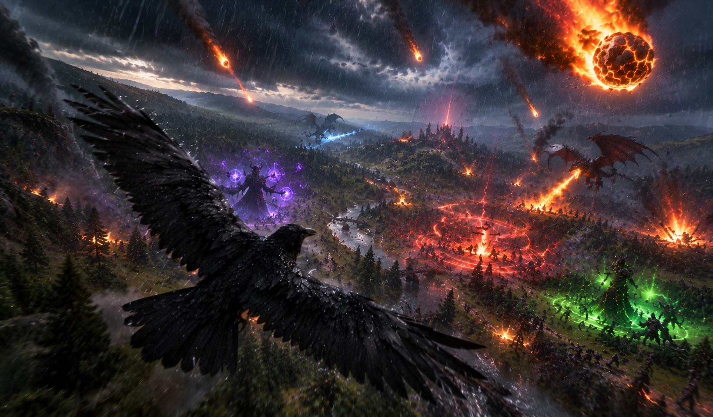

Créateurs d'univers immersifs & sombres
Flexarion façonne des expériences de jeu uniques, alliant tactique profonde, narration captivante et atmosphères mystiques.
Projet phare · crowMasterBêta bientôt disponible
Un corbeau mystique pour défier les ténèbres du royaume.
Plongez dans l'univers sombre et stratégique de crowMaster. Incarnez le maître des corbeaux dans un jeu indépendant alliant exploration, tactique et combats épiques.

Action · Aventure · TactiqueDécouvrir le projet →
Le studio
Une équipe indépendante et passionnée.
Flexarion crée des expériences de jeu immersives et originales, avec une détermination indestructible et une entraide constante.
- Univers fantastiques et sombres
- Tactique et exploration
- Développement 100 % indépendant